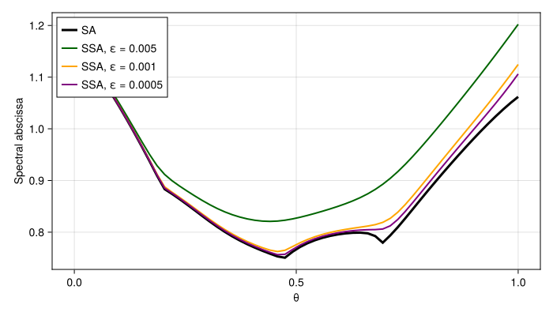

Comparison between SSA and SA
The spectral abscissa (SA) is the largest real part of a matrix's eigenvalues. Here we compare it with its smooth upper bound, the SSA, along a path between two random matrices.
Initialization
using CairoMakie
using LinearAlgebra
using Random
using SmoothedSpectralAbscissa
const SSA = SmoothedSpectralAbscissa
CairoMakie.activate!(type="svg")
Random.seed!(0);A similarity transform changes a matrix's non-normality without changing its eigenvalues. The Schur factors are Z (vectors) and T (quasi-triangular form).
function rand_nonnormal(rng::AbstractRNG, n::Integer, upper_diagonal::Real=1.01)
A = randn(rng, n, n) / sqrt(n)
F = schur(A)
transform = diagm(0 => ones(n), 1 => fill(upper_diagonal, n - 1))
return F.Z * (transform * F.T / transform) * F.Z'
end;A path between matrices
rng = MersenneTwister(0)
n = 40
mat1 = rand_nonnormal(rng, n, 0.8)
mat2 = randn(rng, n, n) / sqrt(n)
mat(θ) = θ * mat1 + (1 - θ) * mat2
θs = range(0.0, 1.0; length=60)
ssa_eps_vals = [0.005, 0.001, 0.0005];Compare the spectral abscissae
sas = map(θ -> SSA.spectral_abscissa(mat(θ)), θs)
fig = Figure(size=(700, 400))
ax = Axis(fig[1, 1]; xlabel="θ", ylabel="Spectral abscissa")
lines!(ax, θs, sas; color=:black, linewidth=3, label="SA")
for (ϵ, color) in zip(ssa_eps_vals, (:darkgreen, :orange, :purple))
ssas = map(θ -> SSA.ssa(mat(θ), ϵ), θs)
lines!(ax, θs, ssas; color=color, linewidth=2, label="SSA, ε = $ϵ")
end
axislegend(ax; position=:lt)
fig
The SSA smooths the changes in the SA and approaches it as ε decreases. Minimizing the SSA can therefore provide a smooth objective for stability optimization.
This page was generated using Literate.jl.